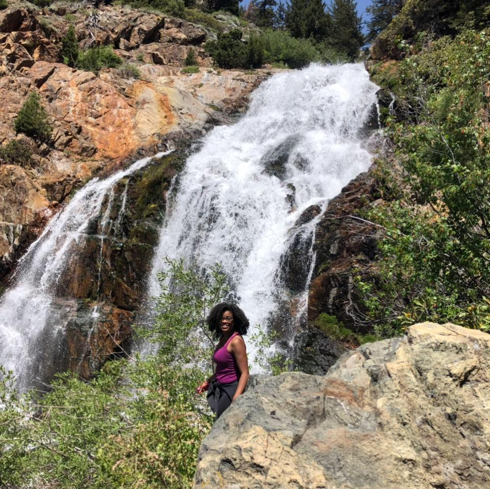
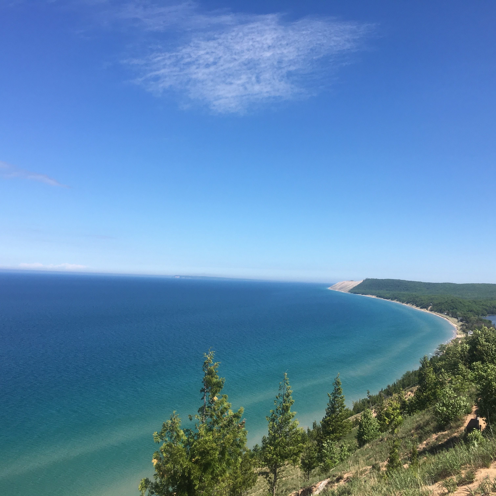
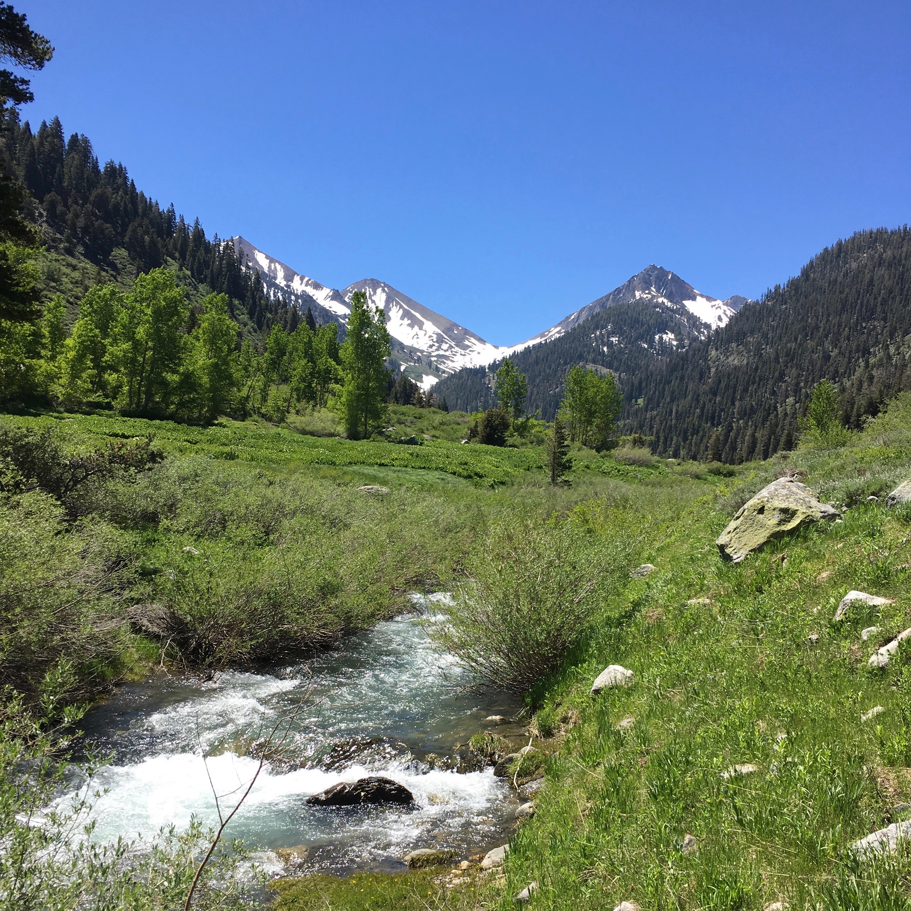
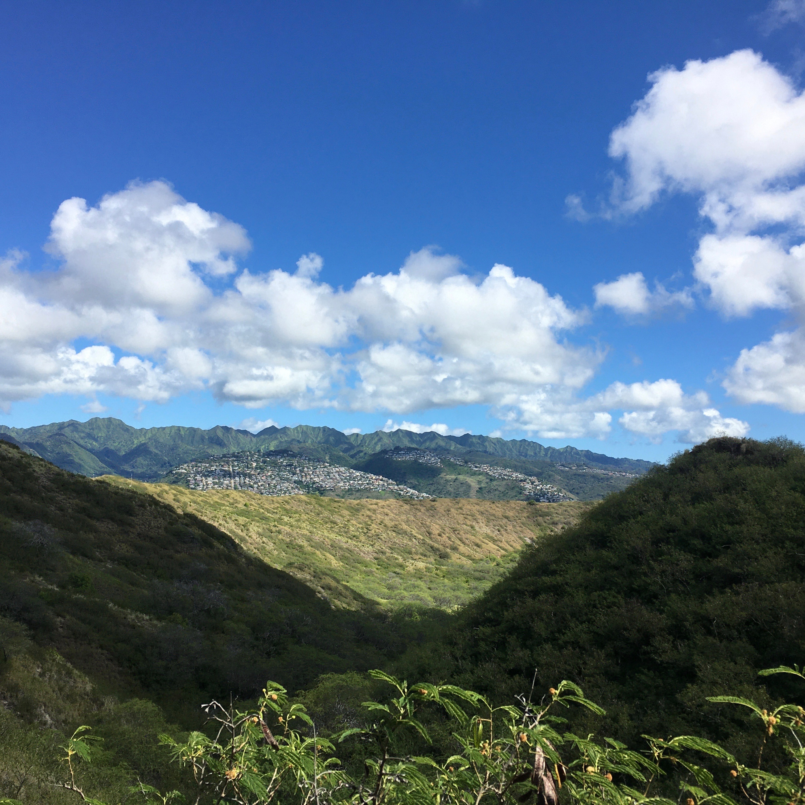
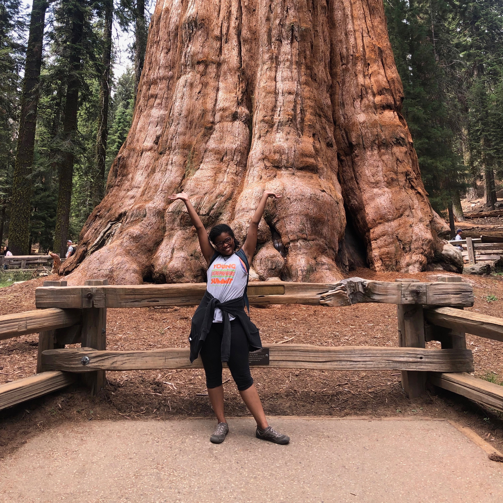
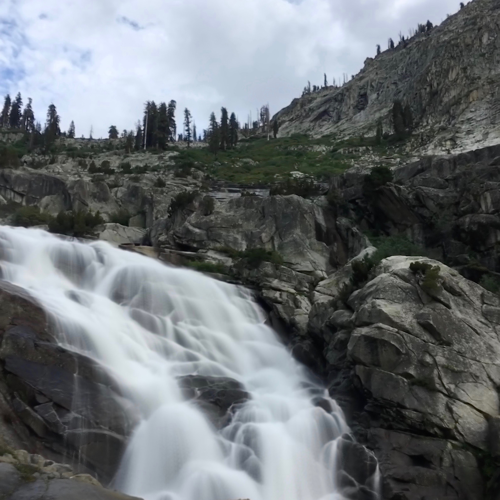
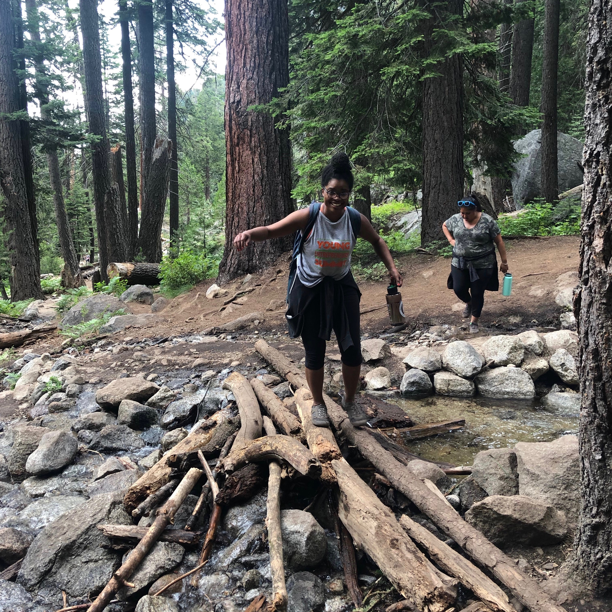
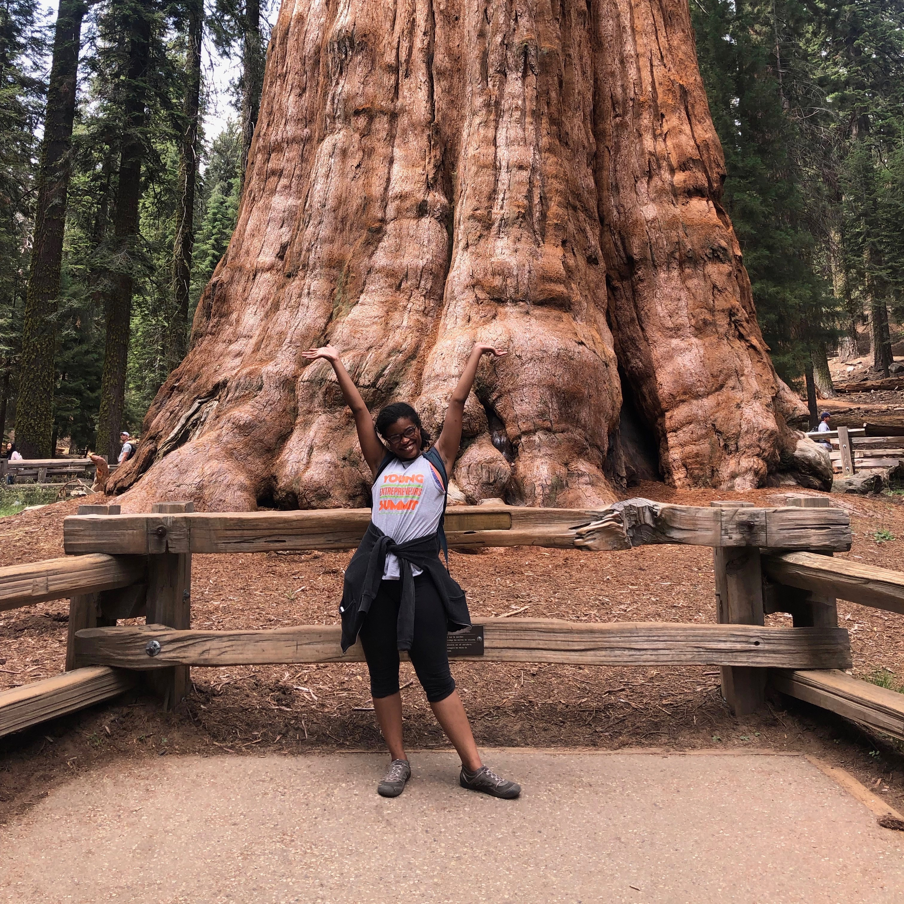
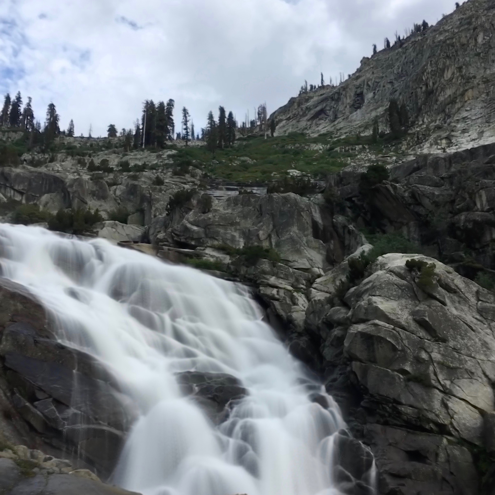
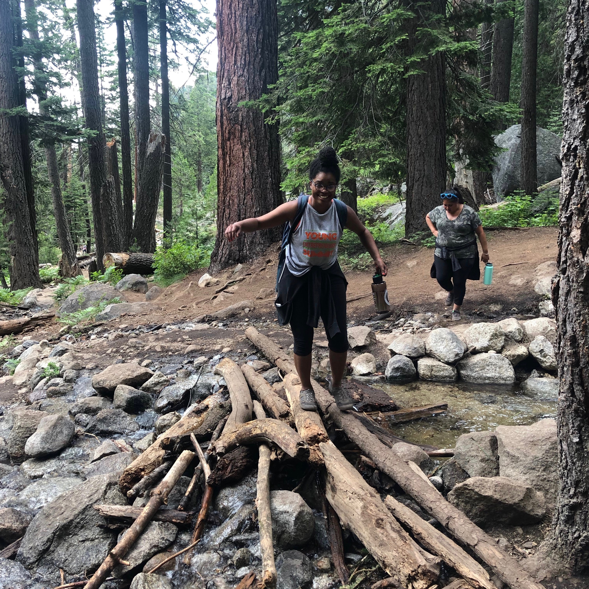

About Me
Mini Bio
I was born and raised in Hot Springs, Arkansas. Hot Springs is a southern small city that hosts Hot Springs National Park, which is famous for the naturally occurring geothermal springs and historic bathhouses. For my love of astronomy, I have to thank my mother. She was the first person to see an astronomer in me, even when I did not know what it was. We would take trips to my grandparents house in rural Arkansas when I was young and my mother noticed I would stare at the moon and stars. She encouraged me to pursue astronomy, she would take me to the library to check out astronomy books and let me watch How the Universe Works, when we had free channel previews on some weekends. I even wrote in my 8th grade yearbook that I hoped my career would be an astronomer! My mom always encouraged me to pursue education and astronomy; I am forever grateful for her and the time we had together.
For my undergraduate degree, I attended the University of Arkansas at Little Rock at Little Rock (UALR), Arkansas where I was a Ronald E. McNair Scholar. The McNair Scholars Program introduced me to the realm of research and to the possibility of obtaining a PhD. My first few research projects were as a McNair scholar; I researched meteorites and Earth as a Transiting Exoplanet. During my senior year I received the Outstanding Senior Award from the McNair Program at UALR. During undergraduate, I had a chance to engage with science education as an educator at the Museum of Discovery in Little Rock, Arkansas; which sparked my interest in educational work.
When I am not working on research, I am enjoying getting back into reading, crafting (coloring, watercoloring, painting flower pots), cooking, and trying my hand at new recipes. Try to find the hidden pages on my website with some of these images! I am also obsessed with Pinterest. I enjoy attending comic conventions to let out my inner nerd. I am passionate about social justice along with equity & inclusion work in astronomy and STEM in general.
Exploring Nature through National Parks and State Parks
Over the past few years, I have had the opportunity to work as a Night Skies Assistant in the National Park Service through the Mosaics in Science Internship Program . In 2016, I worked at Sleeping Bear Dunes National Lakeshore in Empire, Michigan. At Sleeping Bear Dunes, I worked with park staff to provide a detailed documentation of the lighting inventory as the park prepared to apply to become a Dark Sky Park. I also developed astronomy activities for their Inaugural Astronomy Day and collected measurements of the quality of the night sky.
In 2019, I also worked as a Night Skies Assistant at Sequoia National Park in Three Rivers, California. I lived in the Mineral King area of the park, which you can access after a 20 mile scenic drive up a winding mountain where you arrive at a destination 7500 feet above sea level. Mineral King is a very quaint area with no cell service and minimal sound and light pollution. I witnessed some of the most astonishing clear night skies there! I created and implemented the first astronomy evening program for the remote Mineral King area and developed a mobile interpretation station that included topics concerning light pollution and night skies.
Check out some of my favorite photos from my adventures in nature!





 




